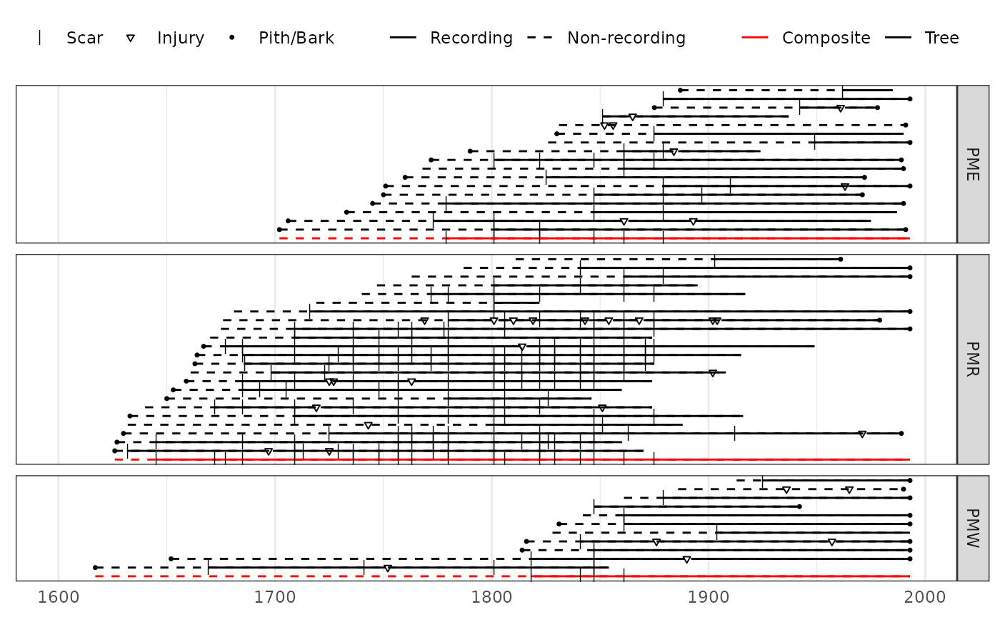

vignettes/facet_comps.Rmd
facet_comps.RmdA limitation of ggplot graphics is an inability to use the composite_rug parameter within a facet generated by plot_demograph(). In this instance, one can make composites and add them to demograph plots within the facets, or stack the composites in a separate facet. We can use the color options of plot_demograph() to help distinguish between trees and site-level composites. This section will demonstrate how.
First, read in three related sites from the Jemez Mountains, New Mexico. These are available on the International Multiproxy Paleofire Database (IMPD).
library(burnr)
library(ggplot2)
## Files were obtained from the IMPD
# url <- "https://www1.ncdc.noaa.gov/pub/data/paleo/firehistory/firescar/northamerica/"
pmr <- read_fhx("uspmr001.fhx")
pme <- read_fhx("uspme001.fhx")
pmw <- read_fhx("uspmw001.fhx")To designate the different sites and data type (tree vs. composite in this case) we create metadata tables for each site from the fhx objects. If we had species information we color by species as well, and would add “composite” as a sort of species.
pmr.meta <- data.frame(series = series_names(pmr), site = 'PMR', type = 'Tree')
pme.meta <- data.frame(series = series_names(pme), site = 'PME', type = 'Tree')
pmw.meta <- data.frame(series = series_names(pmw), site = 'PMW', type = 'Tree')Make the composite fire histories for each site.
pmr.comp <- composite(pmr, comp_name = 'PMR.comp')
pme.comp <- composite(pme, comp_name = 'PME.comp')
pmw.comp <- composite(pmw, comp_name = 'PMW.comp')Make a dataframe for the composites, and combine it with the tree-level data.
comp.meta <- data.frame(series = c('PMR.comp', 'PME.comp', 'PMW.comp'),
site = c('PMR', 'PME', 'PMW'),
type = 'Composite')Combine all of the fhx objects and the metadata tables. We add here the sort function to order the series in the fhx object. In this case, the preferred final look of the plot will be trees sorted by their inner-ring date. In the next step we’ll flip the series order to place the composites on the bottom of each facet, so here we sort the series in the opposite manner.
all.fhx <- sort(pmr, sort_by = "first_year", decreasing = TRUE) +
sort(pme, sort_by = "first_year", decreasing = TRUE) +
sort(pmw, sort_by = "first_year", decreasing = TRUE) +
pmr.comp + pme.comp + pmw.comp
all.meta <- rbind(pmr.meta, pme.meta, pmw.meta, comp.meta)To ensure the composite stays at the bottom of the facet, the factor order needs to be reversed.
Make the fire-demography plot.
plot_demograph(all.fhx, facet_group = all.meta$site,
facet_id = all.meta$series,
color_group = all.meta$type,
color_id = all.meta$series,
ylabels = FALSE, event_size = c(2.5, 1, 1),
plot_legend = TRUE, yearlims = c(1600, 1995)) +
scale_color_manual(values=c('red', 'black')) +
theme(legend.position = 'top',
legend.direction="horizontal",
legend.background=element_rect(fill='white'),
legend.box="horizontal")
To place the composites in their own facet, change the site ID to “composite”. Make sure the order in which the composites are added to the full fhx object matches the order of the tree-level site facets.
comp.meta <- data.frame(series = c('PMR.comp', 'PME.comp', 'PMW.comp'),
site = 'Composite',
type = 'Composite')
all.meta <- rbind(pmr.meta, pme.meta, pmw.meta, comp.meta)
all.meta$site <- factor(all.meta$site,
levels = c("PMR", "PME", "PMW", "Composite"))
# use factor() to resort the facets, placing Composite on bottom
plot_demograph(all.fhx,
facet_group = all.meta$site,
facet_id = all.meta$series,
ylabels = FALSE,
event_size = c(2.5, 1, 1),
plot_legend = TRUE,
yearlims = c(1600, 1995)) +
theme(legend.position = 'top',
legend.direction="horizontal",
legend.background=element_rect(fill='white'),
legend.box="horizontal")